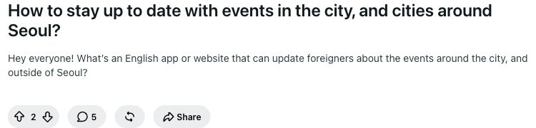
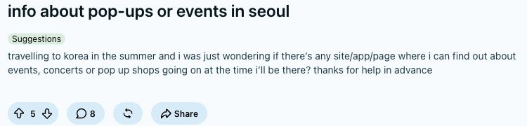
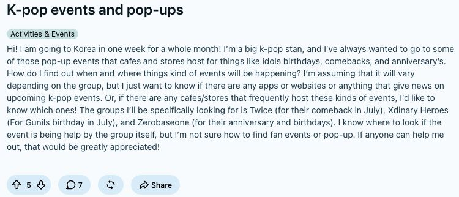
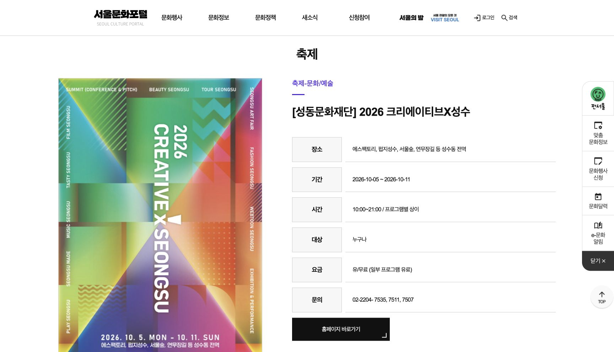
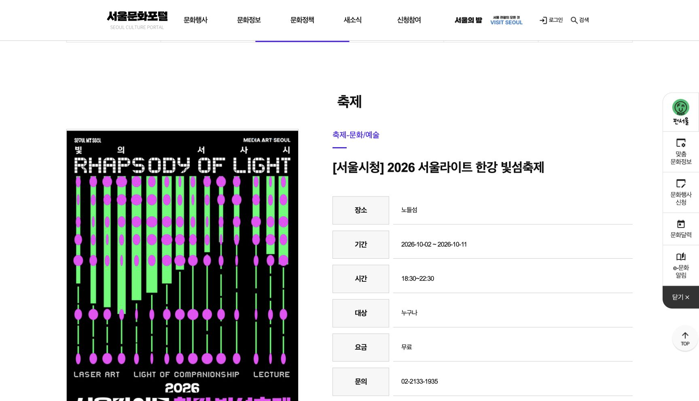

← 발표로 돌아가기출처와 참고 자료
발표에 사용한 자료의 원문과 해석할 때 주의할 점을 정리했습니다.
자료 확인·캡처: 2026년 10월 7일
자료마다 조사 결과인지, 제품 화면인지, 시연용 데이터인지, 디자인 시안인지 표시했습니다. Reddit 캡처에서는 사용자명이 있는 부분을 잘라냈습니다. 본문은 수정하지 않았습니다. 캡처를 클릭하면 이미지 원본을 볼 수 있습니다.
1. 실제 사용자 질문
아래 게시물은 여행자들이 어떤 정보를 찾는지 보여주는 개별 사례입니다. 이 사례만으로 전체 관광객이 얼마나 자주 불편을 겪는지 판단하거나, 영어 안내 서비스가 없다고 결론 내릴 수는 없습니다.
서울과 주변 도시의 행사를 영어로 찾고 싶다는 질문
r/seoul · How to stay up to date with events in the city, and cities around Seoul?게시일: 2025.11.15 · 캡처 당시 점수 2, 댓글 5
“What’s an English app or website that can update foreigners about the events around the city, and outside of Seoul?”

여행 날짜에 맞는 팝업·행사 정보를 어디서 찾는지 묻는 글
r/koreatravel · info about pop-ups or events in seoul게시일: 2024.02.13 · 캡처 당시 점수 5, 댓글 8
“travelling to korea in the summer and i was just wondering if there’s any site/app/page where i can find out about events, concerts or pop up shops going on at the time i’ll be there?”

팬 이벤트와 팝업을 어디서 찾는지 묻는 글 · 보조 사례
r/koreatravel · K-pop events and pop-ups게시일: 2025.06.20 · 캡처 당시 점수 5, 댓글 7
“I know where to look if the event is being help by the group itself, but I’m not sure how to find fan events or pop-up.”

인용문에 있는 오타도 원문 그대로 옮겼습니다. 점수와 댓글 수는 이후 달라질 수 있습니다.
2. 여행 중 겪는 불편을 분석한 연구
야놀자리서치 Insights Vol.41
A Structural Analysis of Tourist Inconveniences in Korea: A Reddit-Based Korea-Japan Comparison윤효원·장수청·최규완, 2026.04.26
| 한국 여행 관련 불편 유형 | 연구에서 보고한 비중 |
|---|
| 디지털 서비스 | 27.8% |
| 관광 정보·안내 | 16.4% |
| 교통 | 13.1% |
| 결제 | 12.0% |
연구는 2023.01–2025.12에 작성된 영어 Reddit 게시물을 분석했습니다. 부정적 경험과 관련된 키워드로 글을 추린 뒤 문단 단위로 나누고, 실제 불편 경험에 해당하는 내용을 골랐습니다. 문단으로 나눈 초기 자료는 한국 3,480개, 일본 3,780개입니다. 정제 전 자료이므로 이 수치를 최종 분석의 분모로 볼 수는 없습니다.
해석 범위: 그래프는 분석된 한국 여행 관련 불편 사례에서 각 유형이 차지하는 비중을 보여줍니다. 전체 관광객의 불만율이나 행사 검색에 한정된 통계는 아닙니다. 서비스 수요나 효과를 측정한 결과도 아닙니다. 상위 네 항목을 같은 0–30% 척도로 표시했습니다.
3. 공식 공지와 카드 시안
2026 크리에이티브X성수
서울문화포털 공식 행사 정보행사 기간 2026.10.05–10.11 · 성수동 전역 · 시간과 요금은 프로그램마다 다릅니다. 게시일은 화면에서 확인하지 못했습니다. 자료를 확인한 날짜는 2026.10.07입니다.

발표에 넣은 영어 카드 4장은 이 행사를 바탕으로 프로젝트에서 제작한 디자인 시안입니다. 기존 이미지 파일을 그대로 사용했습니다. 관리자 화면의 자동 생성·게시 기능과는 아직 연결하지 않았습니다.
카드에 사용한 포스터와 행사 대표 이미지는 주최 측 자료입니다. 세 번째 카드의 장소 사진은 자료사진임을 카드 안에 표시했습니다. 이미지 재사용에 대한 허가는 별도로 확인하지 못했습니다. 발표에서는 공식 공지와 카드 시안을 비교해 설명하는 데 사용하고 출처를 함께 표시했습니다.
2026 서울라이트 한강 빛섬축제 · 보조 공지
서울문화포털 공식 행사 정보행사 기간 2026.10.02–10.11 · 노들섬 · 18:30–22:30 · 무료. 게시일은 화면에서 확인하지 못했습니다. 자료를 확인한 날짜는 2026.10.07입니다.

공식 공지에 행사 정보가 한국어로 제공되는 사례입니다. 이 화면만으로 해당 행사에 영어 안내가 없다고 판단할 수는 없습니다.
4. 제품 화면과 보안 설계의 근거
두 이미지는 실제 배포된 화면을 캡처했지만, 화면에 보이는 데이터는 Mock API에서 제공한 시연용 데이터입니다. 따라서 화면에 표시된 게시물 수, 차단 수, 성공률은 실제 운영 실적이나 실험 결과가 아닙니다.
현재 프로젝트의 정책 설정
instagram_guard:
name: instagram-no-write
endpoints:
- host: graph.facebook.com
port: 443
protocol: rest
enforcement: enforce
access: read-only원본: 프로젝트 policies/openshell/agent-policy.yaml, 2026.10.07 확인. 일부 행사 사이트는 audit 모드로 설정돼 있고, 파일시스템 접근을 제어하는 Landlock은 best_effort로 설정돼 있습니다. 이 설정만으로 모든 요청을 안전하게 처리한다고 보장할 수는 없습니다. 실제로 요청을 차단하는지 확인하는 실험은 아직 남아 있습니다.
캡처 날짜와 출처 목록(JSON) · 발표로 돌아가기
OpenShell 그림의 구현 상태
2026.10.07 확인 기준으로 OpenShellRunner.run, run_stage, 파이프라인 실행부와 게시 승인 API는 미구현 상태입니다. 게시 서비스 코드의 API 호스트는 graph.instagram.com이며, 현재 정책의 읽기 전용 규칙은 graph.facebook.com을 대상으로 합니다. 그림의 차단 표시는 기대 결과입니다.
공통 테스트 경로의 근거는 제공된 「Agentic AI Hackathon 2026 | AI Day Seoul」 자료 5쪽입니다. 현재 프로젝트의 /sandbox/input·out을 /hackathon/input·output과 연결하는 작업이 필요합니다. restricted와 secrets를 포함하는 상위 경로에 넓은 읽기 권한을 주지 않아야 합니다.
심사 기준은 같은 자료 12쪽의 NVIDIA 기술 활용 깊이 40점, 완성도 20점 등을 참고했습니다. 동료 평가 점수는 표의 10점과 본문 예시가 서로 달라 별도로 환산하지 않았습니다. 원본 PDF에는 참가자 안내도 포함돼 있어 공개 사이트에 재배포하지 않았습니다.